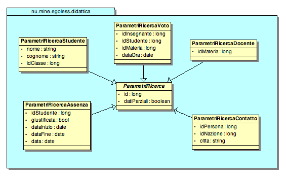

In questa view sono raccolte le classi con i parametri delle ricerche

Classi per la ricerca
Class ParametriRicercaStudente |
Class ParametriRicercaDocente |
Class ParametriRicercaVoto |
Class ParametriRicercaContatto |
Class ParametriRicercaAssenza |
Class ParametriRicerca |